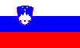

- Ägypten
 Äthiopien
Äthiopien- Albanien
 Algerien
Algerien- Anguilla
 Antarctica
Antarctica- Antigua & Barbuda
- Argentinien
- Armenien
- Aruba
- Australien
 Azerbaijan
Azerbaijan- Bahamas
 Bahrain
Bahrain Bangladesh
Bangladesh- Barbados
 Belarus
Belarus- Belgien
- Belize
- Berg-Karabach
- Bermudas
 Bhutan
Bhutan Bolivien
Bolivien- Bonaire
- Bosnien und Herzegovina
 Botswana
Botswana- Brasilien
- Britisch-Westindien
- Britische Jungferninseln
- Bulgarien
 Cabo Verde
Cabo Verde- Chile
- China
- Cook Inseln
- Costa Rica
- Curaçao
- Deutschland
- Dominikanische Republik
- Dänemark
 Ecuador
Ecuador El Salvador
El Salvador- Estland
 Eswatini
Eswatini Fiji
Fiji- Finnland
- Frankreich
 Färöer Inseln
Färöer Inseln- Georgien
- Griechenland
- Großbritannien
 Guam
Guam- Guatemala
- Haiti
- Honduras
- Indien
- Indonesien
 Irak
Irak- Iran
- Irland
- Island
- Israel
- Italien
- Jamaika
- Japan
 Jemen
Jemen Jordanien
Jordanien- Kaimaninseln
 Kambodscha
Kambodscha- Kanada
 Kasachstan
Kasachstan- Katar
- Kenia
- Kolumbien
- Kroatien
- Kuba
- Laos
 Lesotho
Lesotho Lettland
Lettland- Libanon
 Libyen
Libyen Litauen
Litauen- Luxemburg
 Madagaskar
Madagaskar- Malaysia
 Mali
Mali- Malta
- Marokko
- Mars
- Matrix
 Mauretanien
Mauretanien Mauritius
Mauritius- Mexico
- Mittelerde
 Moldova
Moldova Molvanîa
Molvanîa- Mond
- Montenegro
- Montserrat
 Mosambik
Mosambik- Myanmar (Burma)
 Namibia
Namibia- Nepal
- Neukaledonien
- Neuseeland
 Nicaragua
Nicaragua- Niederlande
- Nigeria
 Niue
Niue Nordkorea
Nordkorea- Nordmazedonien
- Norwegen
 Nördliche Marianen
Nördliche Marianen- Österreich
 Pakistan
Pakistan Panama
Panama Papua-Neuguinea
Papua-Neuguinea Paraguay
Paraguay- Peru
- Philippinen
- Polen
- Portugal
- Puerto Rico
 Ruanda
Ruanda- Rumänien
- Russland
 République du Congo
République du Congo- République Démocratique du Congo
 Sambia
Sambia Samoa
Samoa Saudi-Arabien
Saudi-Arabien- Schweden
- Schweiz
- Serbien
 Simbabwe
Simbabwe
Slovenien- Slowakei
 Somalia
Somalia- Spanien
- Sri Lanka
- St. Kitts und Nevis
- St. Vincent und die Grenadinen
 Syrien
Syrien- Süd Korea
- Südafrika
 Tadschikistan
Tadschikistan- Tansania
- Thailand
 Tonga
Tonga- Trinidad und Tobago
- Tschechien
 Tunesien
Tunesien Turkmenistan
Turkmenistan- Turks- und Caicosinseln
- Türkei
 Uganda
Uganda- Ukraine
- Ungarn
 Uruguay
Uruguay- USA
 Usbekistan
Usbekistan Vanuatu
Vanuatu- Venezuela
 Vereinigte Arabische Emirate
Vereinigte Arabische Emirate- Vietnam
- Zypern

 Index
Index Themen
Themen Hierarchisch
Hierarchisch Länder
Länder Karten
Karten Suche
Suche